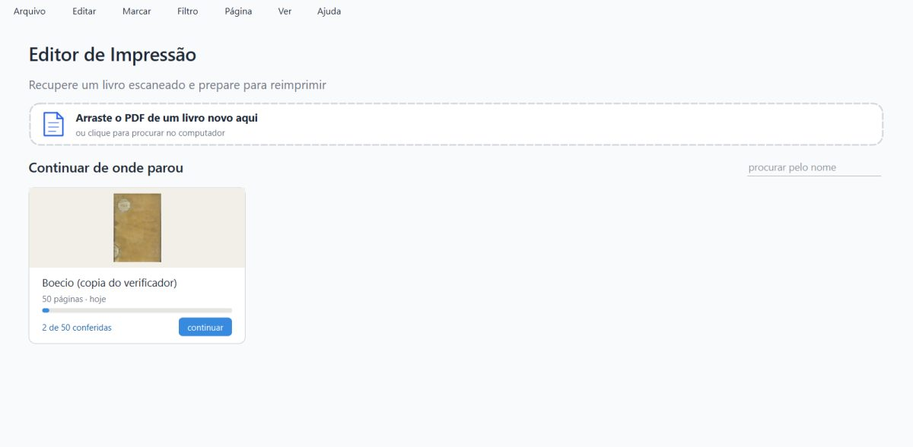
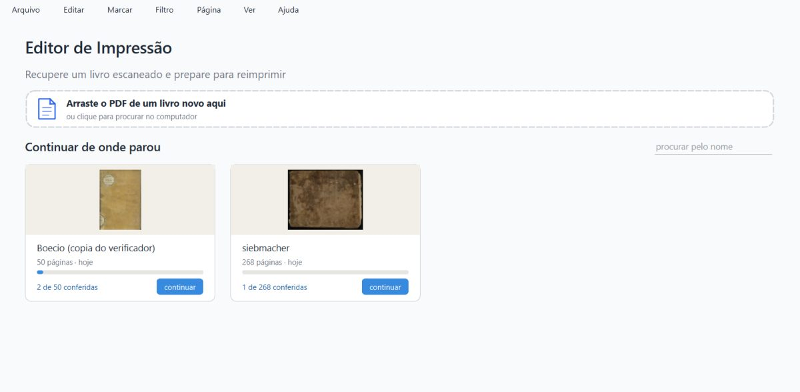
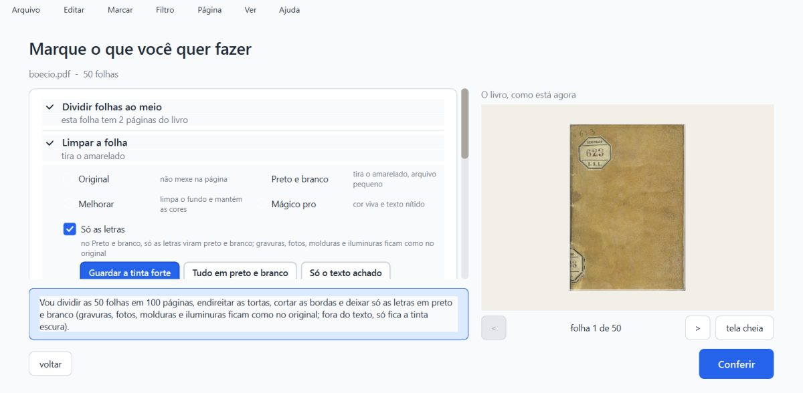
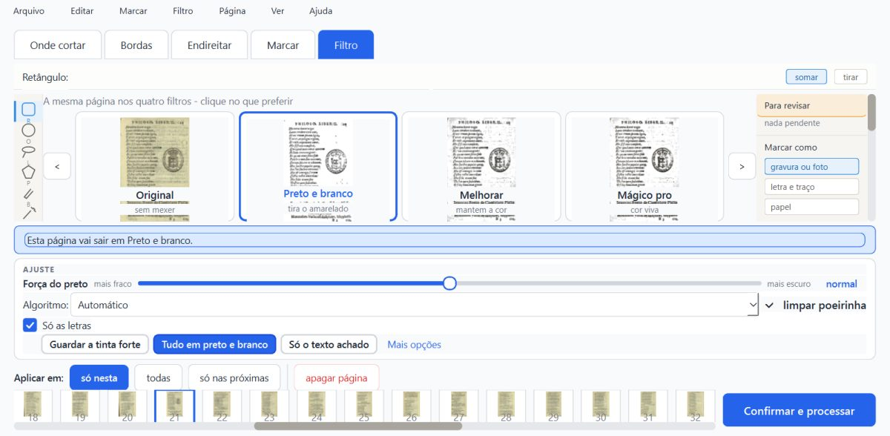
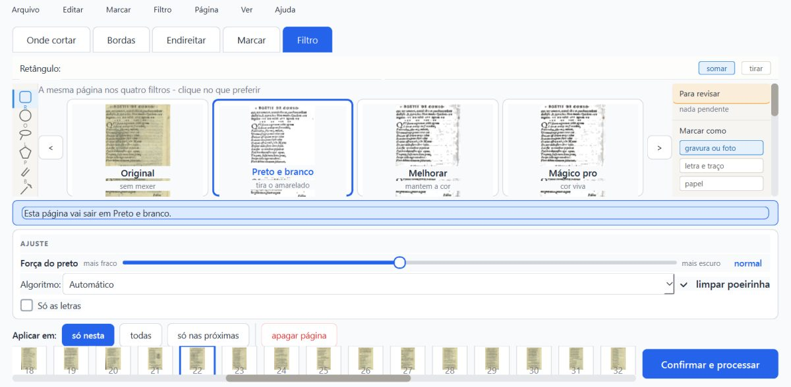
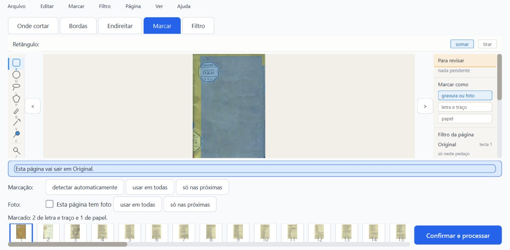
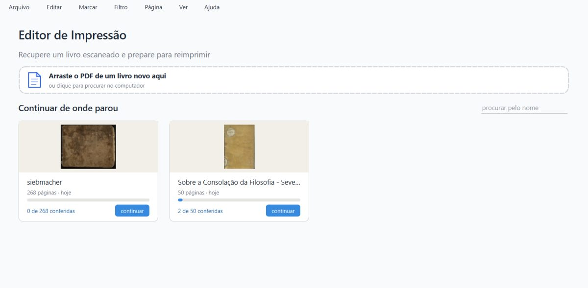
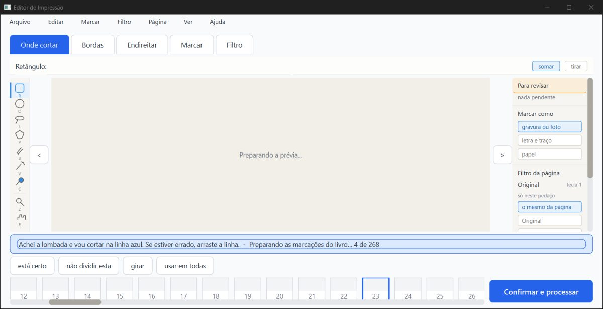

PRONTO PARA CONFERIR, com uma ressalva nova (R-B) que vale consertar antes de levar ao Kaique.
Os três consertos fizeram o que prometiam:
resumo.json vazio, pela metade ou com lixo, o livro continua na lista, com páginas e andamento, e abre.projeto.json e o resumo.json ficaram sempre inteiros.O modo Misto e a gravação por trás convivem: as escolhas do Misto vão para o disco, voltam ao reabrir, e o programa antigo abre o mesmo projeto com as zonas no lugar.
A ressalva (R-B): "Tirar da lista" o livro que está aberto e depois fechar o programa recria a pasta, e o cartão volta para a lista. Com a conversão das zonas rodando, a pasta volta sozinha, sem fechar, quando a conversão termina. O caminho do fechar já acontecia no programa antigo (aab746f) e antes do conserto (5f245d5); o da conversão é desta frente.
Não é "aprovado": só o Samuel marca.
Defeito conhecido (decisão do Samuel, 28/09): a moldura dourada e a iluminura continuam sendo defeito conhecido da Fase 1. Este item não mexe em imagem.
O que foi conferido:
fase2-geometria (worktree geometria) em 7cb4234, com 1abdcdd (R-A), 9764983 (O1), 9d733a5 (O2) e o merge 7cb4234 (Misto);%LOCALAPPDATA% não foram abertos. Tudo rodou numa pasta de dados de teste própria (verificador-3/dados/), com cópias dos projetos do verificador-2 (Siebmacher de 268 páginas e Boécio de 50, os dois no formato antigo, e o Siebmacher já convertido);git archive: novo 7cb4234, antigo aab746f, antes do R-A 5f245d5;| Item | Como | Resultado |
|---|---|---|
| (a) pytest, um arquivo por vez | máquina | 1529 passaram, 59 pularam, 0 falhas (81 arquivos, ~8,5 min somados). Os 59 pulados são de OCR (dados fora do git). Os testes novos: test_trocar_de_livro_grava 6/6, test_resumo_seguro 7/7, test_gravacao_aguenta_queda_de_energia 5/5, os 5 do Misto 105/105. Nada precisou ser repetido. |
(a) teste_botoes.py |
máquina | 132 ações, 0 falhas. Numa cópia git archive (trabalho/botoes), com a saida_teste dela. |
| (b) R-A pelo Ctrl+O, caixa Abrir de verdade | máquina + olho | A mudança fica no disco nas 4 vezes (filtro com Ctrl+O 0,09 / 0,32 / 0,63 s depois; zona com 0,12 s). Ressalva do teste: a caixa do Windows leva 0,5 a 1,9 s para aparecer. Só na 4ª vez o "Abrir" foi apertado antes de 0,6 s (0,56 s), e aí foi o conserto que gravou. Nas outras, o relógio de salvar pode ter gravado enquanto a caixa estava aberta. |
| (b) R-A pelo Ctrl+O, caixa instantânea (o caso mais apertado) | máquina | Fica no disco nas 3 vezes (filtro 0,15 s, zona 0,15 s, filtro 0,32 s), logo depois da troca e depois de fechar. Controle: o mesmo teste no código de antes do conserto (5f245d5) perdeu as 3. O teste separa o certo do errado. |
| (b) R-A pelo cartão da tela inicial | máquina + olho | Fica no disco nas 4 vezes (Voltar 0,11 / 0,30 / 0,60 s depois do filtro; 0,14 s depois da zona; o "continuar" do Boécio 1,5 a 2,4 s depois). Para chegar ao cartão é preciso passar pelo "Voltar para as opções", que já grava na hora. |
| (b) "começar de novo" logo depois de mudar | máquina + olho | O trabalho jogado fora não volta. Mudei o filtro e desenhei uma zona na p139 do Siebmacher, e 3,2 s depois "começar de novo" nele. O projeto.json antigo sumiu; a conferência nova veio do zero (p139 em Original, sem a zona desenhada), na memória e no disco depois de fechar. "Começar de novo" de outro livro (o Boécio) com o Siebmacher mudado: a mudança do Siebmacher ficou no disco. |
| (b) "Tirar da lista" e trocar de livro | máquina + olho | Não recria a pasta quando, depois de tirar, se abre outro livro pelo Ctrl+O (nem depois de fechar). |
| (b) "Tirar da lista" e fechar | máquina + olho | Recria a pasta (R-B). O cartão "siebmacher, 1 de 268 conferidas" volta na próxima abertura. Também em 5f245d5 e em aab746f. |
| (b) "Tirar da lista" com a conversão rodando | máquina | Recria a pasta sozinha (R-B). Siebmacher antigo: tirei da lista com a conversão no meio; a pasta ficou fora por 69,6 s e voltou quando a conversão terminou, sem fechar nada. O mesmo com o Boécio. |
(c) O1: resumo.json estragado |
máquina + olho | O livro continua na lista nos 4 casos (vazio, metade, lixo, e metade nos dois livros de uma vez): "50 páginas · hoje", "2 de 50 conferidas"; "268 páginas", "0 de 268". O resumo.json foi refeito e ficou legível. O "continuar" abre o livro certo, com as 2 conferidas. O Ctrl+O do mesmo PDF acha o projeto (não cria outro). Volta com o nome do projeto ("Sobre a Consolação da Filosofia…"), e não com o nome dado pelo "Renomear" ("Boecio (copia do verificador)"), como o commit avisa. |
| (d) Misto + gravação por trás | máquina + olho | As escolhas ficam. Boécio no formato antigo, com a conversão rodando: • "Só as letras" no livro; • p21: "Tudo em preto e branco" só nela; • p22: "Só as letras" desligada só nela. Depois folheei 10 páginas (10 gravações por trás vistas) e fechei. No disco: livro misto_so_as_letras=true; p21 misto_fora_do_texto="tudo"; p22 misto_so_as_letras=false; 50 páginas no formato novo, com as mesmas zonas de antes. Ao reabrir, a tela mostra exatamente isso (caixinha e botão marcados). |
(d) o programa antigo (aab746f) abre esse projeto |
máquina + olho | Abre. 50 páginas, a contagem de zonas e os filtros iguais aos do disco em todas, e as zonas aparecem na aba Marcar. O erros.log ficou vazio. Ao fechar, o antigo regrava o arquivo sem os campos do Misto e sem as zonas na folha (ver O-b). |
| (e) Siebmacher 268 folheando na conversão | máquina + olho | Responde. 637 cliques, mediana 0,13 s, o mais lento 0,23 s; a página andou em todos. Maior parada da janela durante a conversão: 0,66 s, uma vez, no instante em que a tela de conferir se monta ("0 de 268"), antes do primeiro clique. A conversão levou 164 s. A cópia de segurança é byte a byte igual ao arquivo de antes (sha256 781f61b7…). |
| (e) 3 mortes no meio da gravação | máquina | projeto.json e resumo.json sempre inteiros. 1. Filtro, morto 0,02 s depois de o .novo aparecer (0 bytes nele): o projeto ficou o de antes, inteiro. 2. Zona, morto 0,51 s depois da troca do projeto.json: inteiros. 3. Durante a conversão, folheando, morto 0,05 s depois de o .novo aparecer: inteiro, com 22 de 268 já convertidas e uma cópia de segurança. Nenhum processo auxiliar ficou órfão, e o livro reabriu (268 páginas, erros.log vazio). |
Velocidade (teste_velocidade.py) |
— | Não rodado (~12 min, só com o PC parado). |
O que acontece:
projeto.json e resumo.json), e na próxima abertura o cartão está lá, com "1 de 268 conferidas".Pelo código: o conserto do R-A (_guardar_o_livro_aberto) olha se a pasta ainda existe antes de gravar, mas só é chamado ao trocar de livro e no "começar de novo". O fechar (closeEvent → _salvar_agora) e o relógio de salvar (_salvar_por_tras, que a conversão chama ao terminar em _conversao_terminou) não olham. Como a janela continua com o livro tirado em self.resumo, a gravação faz mkdir e escreve tudo de novo.
Efeito para o Kaique: "tirei o livro da lista e ele voltou". Nada se perde; é o contrário. Mas o cartão que volta tem a conferência que a pergunta disse que ia se perder, e as cópias de segurança já foram para a pasta de cópias guardadas.
Sugestão: soltar o livro aberto (self.resumo = None, como o "começar de novo" do próprio livro já faz) quando ele é tirado da lista, ou pôr a mesma conferência da pasta em _salvar_agora.

Depois do "Tirar da lista" do Siebmacher (que estava aberto): só o Boécio na tela inicial.

Fechei com WM_CLOSE e abri de novo: o cartão do Siebmacher voltou, com "1 de 268 conferidas".
Abri todos os prints da pasta prints/ (60 arquivos, 33 imagens diferentes) e os 10 JPG de imagens/. Como no parecer anterior, o print pelo Windows da janela fora da tela devolve muitas vezes uma pintura antiga: 11 deles são a mesma imagem da tela inicial. O estado foi conferido lendo a janela; por isso gravei também o desenho que o próprio Qt faz da janela (*_qt.png), que é o que vale abaixo.
ra_ctrlo_*_qt): a tela "Marque o que você quer fazer" do boecio.pdf (o livro novo abriu).ra_cartao_*_qt): o Boécio na conferência, com a faixa "Preparando as marcações do livro… 37 a 42 de 50" (a conversão do Boécio rodando por trás).ra_recomecar_proprio_qt): o Siebmacher na conferência nova, com "Achei a lombada e vou cortar na linha azul", miniaturas ainda chegando. Não é o trabalho antigo.o1_*_qt): os dois cartões com páginas e andamento certos. O Boécio aparece com o nome "Sobre a Consolação da Filosofia - Seve…" em vez do nome dado pelo "Renomear".d_*_qt): d_antigo_marcar_qt): a p1 do Boécio na aba Marcar, com as zonas desenhadas ("Marcado: 2 de letra e traço e 1 de papel").sieb5_*): a faixa "Preparando as marcações do livro… 2 de 268" e "4 de 268" durante a conversão. Depois dela, as miniaturas e a página 126 (bordado) com "atualizando…".
Boécio, tela "Marque o que você quer fazer": Preto e branco e "Só as letras" no livro, com os três botões.

Depois de fechar e reabrir: a p21 continua em Preto e branco, com "Só as letras" e "Tudo em preto e branco" escolhido só nela.

A p22, com "Só as letras" desligada só nela, também voltou assim.

O programa ANTIGO (aab746f) abrindo o mesmo projeto: as zonas aparecem na aba Marcar.

O resumo.json do Boécio zerado: o cartão continua lá, com "50 páginas" e "2 de 50 conferidas", agora com o nome do projeto.

Siebmacher, folheando durante a conversão: "Preparando as marcações do livro… 4 de 268".
| Rodada | Conversão | Cliques | Clique mais lento | Maior parada durante a conversão |
|---|---|---|---|---|
sieb5 (esta, 7cb4234) |
164 s | 637 | 0,228 s | 0,66 s, no início (tela de conferir se montando) |
sieb3 (verificador-2, 858f314) |
187 s | 702 | 0,235 s | 0,57 s, no início |
sieb4 (verificador-2, 858f314) |
190 s | 711 | 0,232 s | 0,74 s, no início |
Fora da conversão: o programa fica 10,6 s sem responder ao iniciar (carregando o próprio programa) e 1,6 s ao abrir o livro. As duas coisas são de antes. O fsync do O2 não apareceu como parada: depois do início, nenhuma parada de 0,25 s ou mais até o fim da conversão.
Ver a seção 2. Pelo fechar, já existia (aab746f, 5f245d5). Pelo fim da conversão, é desta frente.
Marquei "Preto e branco" e "Só as letras" no livro e cliquei Conferir. O Misto do livro ficou ligado, mas o filtro do livro voltou a "original": o projeto salvo volta por cima, e só o Misto (e as gravuras e a moldura) é copiado da tela. É o bug anotado no código ("As caixinhas continuam perdendo o que se muda na volta…", 29/09).
Com o Misto, isso dá uma situação estranha: o livro fica com "Só as letras" ligada e o filtro em Original. Na tela de opções, a caixinha só aparece no Preto e branco, então ela some, mas continua valendo nas páginas em Preto e branco.
O aab746f abre o projeto e mostra as zonas, mas ao fechar regrava o projeto.json sem os campos do Misto e sem as zonas na folha. Se o Kaique abrir um livro no programa antigo, as escolhas do Misto daquele livro se perdem, e na próxima vez o programa novo converte as zonas de novo (com outra cópia de segurança).
resumo.json refeito perde o nome do "Renomear" e muda a ordem dos cartões (baixa, documentado no commit)As datas viram a do projeto.json, então o cartão pode mudar de lugar. A página em que parou volta para a 1ª.
resumo.json não foi pega: a morte 2 veio 0,51 s depois da troca do projeto.json, e o resumo.json.novo não foi visto nesse intervalo. O resumo estragado foi testado à parte (item c).fsync está coberto só pelos 5 testes de máquina.abrir_livro); a escala real do notebook do Kaique; o teste_velocidade.py.aab746f pelo fechar. Registro: trabalho/ra_tirar_fechar.log, trabalho/ra_tirar_conversao_sieb.log, trabalho/ra_tirar_conversao.log; prints imagens/ra_tirar_fechar_*.jpg.scripts/ra.py (b), scripts/o1.py (c), scripts/misto.py (d), scripts/folhear_v3.py e scripts/mortes.py (e), scripts/pytest_por_partes_v4.sh, scripts/v3.py. O piloto do verificador-2 foi copiado com duas mudanças:canal3;VERIF_CAIXA_REAL=1, para usar a caixa Abrir do Windows.trabalho/pytest_partes_v4.log, trabalho/teste_botoes_v4.log, trabalho/ra_*.log, trabalho/o1.log, trabalho/misto.log, trabalho/folhear_sieb5.log, trabalho/mortes.log..md e .html) e as imagens pequenas em imagens/. O .pdf fica na pasta.Editor de Impressão · gerado em 06/10/2026 às 04:57